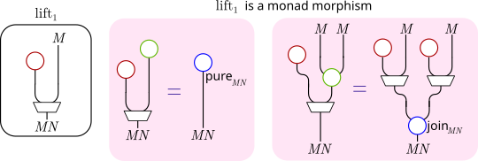
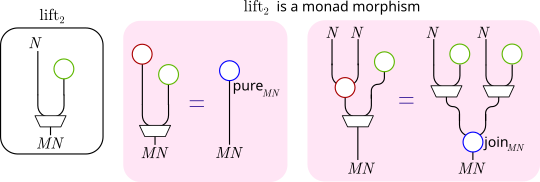
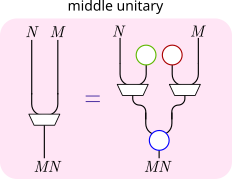
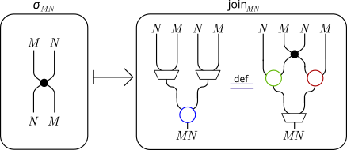
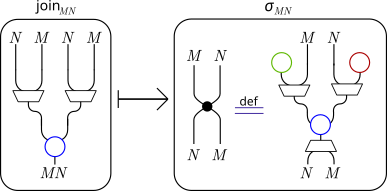

% basic set manipulation
\gdef\id{\mathop{\mathrm{id}}}
\gdef\comp{\mathbin{\circ}}
\gdef\placeholder{{-}}
\gdef\setsum{\operatorname{\raisebox{-0.2em}{$\Large\theta$}}}
\gdef\setprod{\operatorname{\raisebox{-0.2em}{$\Large\Pi$}}}
% category theory
\gdef\Set{\mathrm{\mathbf{Set}}}
\gdef\Cat{\mathrm{\mathbf{Cat}}}
\gdef\Functors#1{\mathrm{\mathbf{Fun}}\left({#1}\right)}
\gdef\Monads#1{\mathrm{\mathbf{Monads}}\left({#1}\right)}
\gdef\Comonads#1{\mathrm{\mathbf{Comonads}}\left({#1}\right)}
\gdef\CatC{\Cat^\sharp}
\gdef\Ob{\mathop{\mathrm{Ob}}}
\gdef\Mor{\mathop{\mathrm{Mor}}}
\gdef\dom{\mathop{\mathrm{dom}}}
\gdef\cod{\mathop{\mathrm{cod}}}
\gdef\map{\mathop{\mathrm{map}}}
\gdef\binprod{\mathbin{\Pi}}
\gdef\bincoprod{\mathbin{\amalg}}
\gdef\Id{\mathrm{Id}}
% custom notations
\gdef\homset#1#2#3{{#1}\! \left\lbrack {#2}, {#3} \right\rbrack}
\gdef\homsetl#1#2{{#1}\! \left\lbrack {#2} \right\rbrack}
\gdef\asfunctor#1{\left. \llbracket {#1} \rrbracket^{c} \right.}
\gdef\Cont{\mathrm{\mathbf{Cont}}}
\gdef\Poly{\mathrm{\mathbf{Poly}}}
\gdef\PolyFunctor#1{\mathrm{\mathbf{PFun}}\left({#1}\right)}
\gdef\contcomp{\lhd}
\gdef\inl{\operatorname{\mathtt{inl}}}
\gdef\inr{\operatorname{\mathtt{inr}}}
\gdef\divleft#1#2{\frac{{#1}, \_}{{#1}, {#2}}}
\gdef\divright#1#2{\frac{\_, {#2}}{{#1}, {#2}}}
\gdef\rootpos{o}
\gdef\nextshape{\darr}
\gdef\posplus{\oplus}
\gdef\retroarr{\nrightarrow}
\gdef\Travel{\operatorname{\mathrm{Travel}}}
\gdef\Flow{\operatorname{\mathrm{Flow}}}
\gdef\pure{\mathop{\mathrm{pure}}}
\gdef\join{\mathop{\mathrm{join}}}
\gdef\extract{\mathop{\mathrm{ex}}}
\gdef\duplicate{\mathop{\mathrm{dup}}}
\gdef\keyword#1{\mathrel{\mathrm{\mathbf{#1}}}}概要
2つのモナドM,Nの関手としての合成M\comp Nは、再びモナドになるとは限りません。 しかし、モナドの分配法則という特別な性質をもつ自然変換を使うとM\comp Nをモナドにすることができ、 しかもそのモナドは個別のモナドM, NをM\comp Nに持ち上げる(lift)ことができるモナドです。
このブログでも以前、ReaderTや
WriterT、
ExceptTといったモナド変換子は、
“分配”という自然変換を用いて定義でき、
これらを一般化すると2つのモナドの合成Compose m nは分配swap :: forall x. n (m x) -> m (n x)
を用いて定義できることを説明しました。
当時はこれらの自然変換のことを”分配”と呼んでいましたが、
今後は一般的な名称に合わせて分配法則(distributive law)と呼ぶことにします。
この記事で例に挙げた分配法則には以下のようなものがあります。
-- Reader r の m に対する分配法則
swapMR :: (Functor m) => m (r -> b) -> r -> m b
-- m の Writer w に対する分配法則
swapWM :: (Functor m) => (w, m b) -> m (w, b)
-- m の Either e に対する分配法則
swapEM :: (Monad m) => Either e (m b) -> m (Either e b)本記事では、モナドではなくコモナドの分配法則についても解説します。 モナドと全く同じように、コモナドの分配法則は、それを使うと2つのコモナドの合成関手 を再度コモナドにできます。
加えて、コモナドの分配法則を特にStoreコモナドについて調べた結果として、
Torsorという代数構造をもつ型
Sに対して∀w. (Comonad w) => ∀x. w (Store S x) -> Store S (w x)という分配法則を定めることができることBoolのようにちょうど2種類の値をとる型S, T(|S| = |T| = 2) に対して、Store SのStore Tに対する分配法則dist :: ∀x. Store S (Store T x) -> Store T (Store S x)をプログラムで全探索した結果、1.の方法で説明できるもの1つを含む4つの分配法則が 得られたこと
について説明します。これは、先月からBlueskyにてつぶやいていた内容になります。
モナドの分配法則
モナドの分配法則は以下のように定義されます。
- モナドの分配法則
-
MとNを圏\mathcal{C}上のモナドとする。 モナドMのNに対する分配法則(distributive law of monad M over N)を、 自然変換
\theta : N\comp M \to M\comp Nであって、以下の等式\mathrm{(DM1)-(DM4)}を満たすものと定義する。
\begin{alignat}{2} \theta \comp \pure_{N}M &= M \pure_{N} & &: M \to M\comp N \tag{DM1}\\ \theta \comp N\pure_M &= \pure_{M} N & &: N \to M\comp N \tag{DM2}\\ \theta \comp \join_{N}M &= M\join_{N} \comp \theta N \comp N \theta & &: N\comp N\comp M \to M\comp N \tag{DM3}\\ \theta \comp N\join_{M} &= \join_{M}N \comp M \theta \comp \theta M & &: N\comp M\comp M \to M\comp N \tag{DM4} \end{alignat}
等式\mathrm{(DM1)-(DM4)}をストリング図で描くと以下のようになります。1
以下のよく知られた参考文献参照事実があり、モナドMのNに対する分配法則を与えることは、 モナドの合成MNを与えることと全く同じです。
- モナドの合成
-
M,N : \mathcal{C} \to \mathcal{C}をそれぞれモナドとする。 MとNの合成モナドを、 台となる関手がM,Nの関手としての合成M\comp NであるモナドMN = (M\comp N, \pure_{MN}, \join_{MN})であって、 更に以下の3条件(left lifting, right lifting, middle unitary)を満たすものと定義する。
Left lifting:「Mを持ち上げる」自然変換
\mathrm{lift}_1 = M\pure_{N} : M \to M\comp N
はモナド準同型でもある。
 Right lifting:「Nを持ち上げる」自然変換
\mathrm{lift}_2 = \pure_{M}N : N \to M\comp N
はモナド準同型でもある。
 Middle unitary: 任意のMNはM,Nを持ち上げたものを組み合わせて書ける。特に
\join_{MN} \comp \mathrm{lift}_1 MN \comp M\mathrm{lift_2} = \id_{MN} : M \comp N \to M \comp N
が成り立つ。

- モナドの分配法則\Rightarrowモナドの合成
-
M,N : \mathcal{C} \to \mathcal{C}をそれぞれモナド、\theta : N\comp M \to M \comp Nを分配法則とする。 以下のように定義される\pure_{MN}, \join_{MN}によってMN=(M\comp N, \pure_{MN}, \join_{MN})は MとNの合成モナドである。
\begin{align*} & \pure_{MN} : \Id \to M \comp N \\ & \pure_{MN} = \pure_{M}N \comp \pure_{N} \\ & \join_{MN} : M \comp N \comp M \comp N \to M \comp N \\ & \join_{MN} = M \join_{N} \comp \join_{M} NN \comp M \theta N \end{align*} - モナドの分配法則\Leftarrowモナドの合成
-
M,N : \mathcal{C} \to \mathcal{C}をそれぞれモナド、MNをMとNの合成モナドとすると、 以下の自然変換\theta_{MN} : N\comp M \to M\comp Nは分配法則である。
\theta_{MN} = \join_{MN} \comp \pure_{M}NMN \comp NM\pure_{N}
更に\theta_{MN} \mapsto \join_{MN}と\join_{MN}\mapsto \theta_{MN}は互いに逆変換になっており、 モナドの分配法則はモナドの合成と同じものを表していることがわかります。
このブログにおける以前の記事ではReaderT, WriterT, ExceptTなどのモナド変換子を解説しました。
その内容は、Reader r, Writer w, Either eといったモナドと別の任意のモナドmが(適切な合成順の)分配法則をもつこと、
そして分配法則を用いると上で定義された合成モナドを作ることができるというものです。つまり、その記事で行っていたことは上記の
「モナドの分配法則\Rightarrowモナドの合成」の例および証明だったというわけです。
コモナドの分配法則
さて、圏\mathcal{C}上のコモナドは\mathcal{C}^{\mathrm{op}}上のモナドと考えることができるので、上記の定義に登場する自然変換をすべて逆向きにすることで、 コモナドの分配法則も定義できます。
- コモナドの分配法則
-
WとVを圏\mathcal{C}上のコモナドとする。 コモナドWのVに対する分配法則(distributive law of comonad W over V)を、 自然変換
\theta : W\comp V \to V\comp Wであって、以下の等式\mathrm{(DW1)-(DW4)}を満たすものと定義する。
\begin{alignat}{2} \extract_{V}W \comp \theta &= W \extract_{V} & &: W\comp V \to W \tag{DW1}\\ V\extract_{W} \comp \theta &= \extract_{W} V & &: W\comp V \to V \tag{DW2}\\ \duplicate_{V}W \comp \theta &= V\theta \comp \theta V \comp W\duplicate_{V} & &: W\comp V \to V\comp V\comp W \tag{DW3}\\ V\duplicate_{W} \comp \theta &= \theta W \comp W \theta \comp \duplicate_{W}V & &: W\comp V \to V\comp W\comp W \tag{DW4} \end{alignat}
こちらも等式\mathrm{(DW1)-(DW4)}をストリング図で描くと以下のようになります。（ラベルを除けば、モナドの分配法則の上下を反転しただけですね！）
コモナドの分配法則と以下の”合成コモナド”が対応することも、モナドの場合から定義と証明をすべて双対なものに読み替えて得られます。
- コモナドの合成
-
W,V : \mathcal{C} \to \mathcal{C}をそれぞれコモナドとする。 WとVの合成コモナドを、 台となる関手がW,Vの関手としての合成W\comp VであるコモナドWV = (W\comp V, \extract_{WV}, \duplicate_{WV})であって、 更に以下の3条件を満たすものと定義する。
- 「Wを取り出す」自然変換\mathrm{lower}_1 = W\extract_{N} : W\comp V \to Wはコモナド準同型
- 「Vを取り出す」自然変換\mathrm{lower}_2 = \extract_{W}V : W\comp V \to Vはコモナド準同型
- Middle unitary条件\mathrm{lower}_1 V \comp WV\mathrm{lower}_2 \comp \duplicate_{WV} = \id : W\comp V \to W \comp V
コモナド変換子の一部は、モナド変換子と同様に「合成コモナド」として（つまり、分配法則を使って）得られます。 comonadライブラリ内にあるものとしては、以下の2つがそのようなコモナド変換子です。
EnvTコモナド変換子は、
EnvT e wがEnv eと任意のコモナドwの合成コモナドEnv e ∘ wであることに由来する- つまり、コモナドの分配法則\theta_{\mathtt{EnvT}} : \mathtt{Env\ e} \comp W \to W \comp \mathtt{Env\ e}がある
TracedTコモナド変換子は、
TracedT m wが任意のコモナドwとTraced mの合成コモナドw ∘ Traced mであることに由来する- つまり、コモナドの分配法則\theta_{\mathtt{TracedT}} : W \comp \mathtt{Traced\ m} \to \mathtt{Traced\ m} \comp Wがある
コモナドの分配法則の例
コモナド変換子EnvT
前述したように、コモナド変換子EnvTはコモナドの分配法則を用いて得られます。
以下に与えられた型Aを環境とするEnvコモナドEnv Aを短くEと書くことにし、コモナドEの定義を数式で書き下したものを示します。
\begin{align*}
& E : \Set \to \Set \\
& E X = A \times X
\end{align*}\begin{align*}
& \extract_{E} : \forall X. A \times X \to X \\
& \extract_{E}(a,x) = x \\
& \duplicate_{E} : \forall X. A \times X \to A \times (A \times X) \\
& \duplicate_{E}(a,x) = (a,(a,x))
\end{align*}コモナド変換子EnvTは、EnvコモナドEの任意のコモナドVに対する以下の分配法則\theta_{\mathtt{EnvT}}によって定まる
合成コモナドです。2
\begin{align*}
& \theta_{\mathtt{EnvT}} : \forall X. E (V X) \to V (E X) \\
& \theta_{\mathtt{EnvT}} (a, v_x) = \map_{V} (a,-) v_x
\end{align*}証明
以下のように計算して確かめられます。 省略のため\theta_{\mathtt{EnvT}}=\thetaとおきます。
\begin{equation}
\begin{rcases}
\begin{aligned}
&\phantom{=} (\extract_{V}E \comp \theta)(a, v_x) \\
&= \extract_{V, Ex} (\map_{V} (a,-) v_x) \\
&= (a, -) (\extract_{V, x} v_x) \\
&= (a, \extract_{V,x} v_x) \\
&= \map_{E} \extract_{V} (a, v_x)
\end{aligned}
\end{rcases}
\tag{DW1-EnvT}
\end{equation}\begin{equation}
\begin{rcases}
\begin{aligned}
&\phantom{=} (V\extract_{E} \comp \theta)(a, v_x) \\
&= \map_{V} \extract_{E,x} (\map_{V} (a,-) v_x) \\
&= \map_{V} (\extract_{E,x} \comp (a, -)) v_x \\
&= \map_{V} (\id_x) v_x \\
&= v_x \\
&= \extract_{E, Vx} (a, v_x)
\end{aligned}
\end{rcases}
\tag{DW2-EnvT}
\end{equation}\begin{equation}
\begin{rcases}
\begin{aligned}
&\phantom{=} (\duplicate_{V}E \comp \theta)(a, v_x) \\
&= \duplicate_{V,Ex} (\map_{V} (a,-) v_x) \\
&= \map_{V\comp V} (a,-) \duplicate_{V,x} v_x \\
&\phantom{=} (V\theta \comp \theta V \comp E\duplicate_{V})(a,v_x) \\
&= \map_V \theta_{x} (\theta_{Vx} (\map_E \duplicate_V (a,v_x))) \\
&= \map_V \theta_{x} (\theta_{Vx} (a, \duplicate_V v_x)) \\
&= \map_V \theta_{x} (\map_V (a, -) (\duplicate_V v_x)) \\
&= \map_V (\theta_{x} \comp (a, -)) (\duplicate_V v_x) \\
&= \map_V (\lambda v'_x. \theta_{x} (a, v'_x)) (\duplicate_V v_x) \\
&= \map_V (\lambda v'_x. \map_V (a, -) v'_x) (\duplicate_V v_x) \\
&= \map_V (\map_V (a,-)) v_x \\
&= \map_{V\comp V} (a,-) v_x
\end{aligned}
\end{rcases}
\tag{DW3-EnvT}
\end{equation}\begin{equation}
\begin{rcases}
\begin{aligned}
&\phantom{=} (V\duplicate_{E} \comp \theta)(a, v_x) \\
&= \map_V \duplicate_E (\theta (a, v_x)) \\
&= \map_V \duplicate_E (\map_V (a, -) v_x) \\
&= \map_V (\duplicate_E \comp (a, -)) v_x \\
&= \map_V (a, (a, -)) v_x \\
&\phantom{=} (\theta E \comp E \theta \comp \duplicate_{E}V)(a,v_x) \\
&= \theta_{Ex} (\map_E \theta_{x} (\duplicate_{E,Vx} (a,v_x))) \\
&= \theta_{Ex} (\map_E \theta_{x} (a,(a,v_x))) \\
&= \theta_{Ex} (a, \theta_{x} (a,v_x)) \\
&= \theta_{Ex} (a, \map_V (a,-) v_x) \\
&= \map_V (a,-) (\map_V (a,-) v_x) \\
&= \map_V ((a,-) \comp (a,-)) v_x \\
&= \map_V (a,(a,-)) v_x
\end{aligned}
\end{rcases}
\tag{DW4-EnvT}
\end{equation}コモナド変換子TracedT
コモナド変換子TracedTもまた、コモナドの分配法則を用いて得られます。
与えられたモノイドB=(B,1_B,\cdot)を用いるTracedコモナドTraced Bを短くTと書くことにし、コモナドTの定義を数式で書き下したものを示します。
\begin{align*}
& T : \Set \to \Set \\
& T X = B \to X
\end{align*}\begin{align*}
& \extract_{T} : \forall X. (B \to X) \to X \\
& \extract_{T} f = f(1_B) \\
& \duplicate_{T} : \forall X. (B \to X) \to (B \to B \to X) \\
& \duplicate_{T} f = \lambda (b_1 : B). \lambda (b_2 : B). f(b_1 \cdot b_2)
\end{align*}コモナド変換子TracedTは、任意のコモナドWのTracedコモナドTに対する以下の分配法則\theta_{\mathtt{TracedT}}によって定まる
合成コモナドです。
\begin{align*}
& \theta_{\mathtt{TracedT}} : \forall X. W (B \to X) \to (B \to W X) \\
& \theta_{\mathtt{TracedT}} w_f = \lambda (b : B). \map_{W} (b^{*}) w_f
\end{align*}ただし、b^{*}は(\lambda f. f(b)) : \forall Z. (B \to Z) \to Zを意味し、 具体的な集合Zは文脈から補われている（“型推論”されている）ものとして扱います。
証明
以下のように計算して確かめられます。 省略のため\theta_{\mathtt{TracedT}}=\thetaとおきます。
\begin{equation}
\begin{rcases}
\begin{aligned}
&\phantom{=} (\extract_{T}W \comp \theta)w_f \\
&= \extract_{T, Wx} (\lambda b. \map_{W} b^{*} w_f) \\
&= \map_{W} 1_B^{*} w_f \\
&= \map_{W} \extract_{T} w_f
\end{aligned}
\end{rcases}
\tag{DW1-TracedT}
\end{equation}\begin{equation}
\begin{rcases}
\begin{aligned}
&\phantom{=} (T\extract_{W} \comp \theta) w_f \\
&= \map_{T} \extract_{W} (\lambda b. \map_{W} b^{*} w_f) \\
&= \lambda b. \extract_{W} (\map_{W} b^{*} w_f) \\
&= \lambda b. b^{*} (\extract_{W} w_f) \\
&= \lambda b. \extract_{W} w_f b \\
&= \extract_{W} w_f
\end{aligned}
\end{rcases}
\tag{DW2-TracedT}
\end{equation}\begin{equation}
\begin{rcases}
\begin{aligned}
&\phantom{=} (\duplicate_{T}W \comp \theta) w_f \\
&= \duplicate_{T,Wx} (\lambda b. \map_{W} b^{*} w_f) \\
&= \lambda b_1. \lambda b_2. \map_W (b_1 \cdot b_2)^{*} w_f \\
&\phantom{=} (T\theta \comp \theta T \comp W\duplicate_{T})w_f \\
&= \map_T \theta_{x} (\theta_{Tx} (\map_W \duplicate_T w_f)) \\
&= \map_T \theta_{x} (\lambda b_1. \map_W b_1^{*} (\map_W \duplicate_T w_f)) \\
&= \lambda b_1. \theta_{x} (\map_W b_1^{*} (\map_W \duplicate_T w_f)) \\
&= \lambda b_1. \lambda b_2. \map_W b_2^{*} (\map_W b_1^{*} (\map_W \duplicate_T w_f)) \\
&= \lambda b_1. \lambda b_2. \map_W (b_2^{*} \comp b_1^{*} \comp \duplicate_T) w_f \\
&= \lambda b_1. \lambda b_2. \map_W (\lambda f. \duplicate_T f b_1 b_2) w_f \\
&= \lambda b_1. \lambda b_2. \map_W (\lambda f. f(b_1\cdot b_2)) w_f \\
&= \lambda b_1. \lambda b_2. \map_W (b_1\cdot b_2)^{*} w_f
\end{aligned}
\end{rcases}
\tag{DW3-TracedT}
\end{equation}\begin{equation}
\begin{rcases}
\begin{aligned}
&\phantom{=} (T\duplicate_{W} \comp \theta)w_f \\
&= \map_T \duplicate_W (\theta w_f) \\
&= \map_T \duplicate_W (\lambda b. \map_W b^{*} w_f) \\
&= \lambda b. \duplicate_W (\map_W b^{*} w_f) \\
&\phantom{=} (\theta W \comp W \theta \comp \duplicate_{W}T) w_f \\
&= \theta_{Wx} (\map_W \theta_{x} (\duplicate_{W,Tx} w_f)) \\
&= \theta_{Wx} (\map_W (\lambda w'_f. \lambda b. \map_W b^{*} w'_f) (\duplicate_{W,Tx} w_f)) \\
&= \lambda b. \map_W b^{*} (\map_W (\lambda w'_f. \lambda b'. \map_W b'^{*} w'_f) (\duplicate_{W,Tx} w_f)) \\
&= \lambda b. \map_W (\lambda w'_f. b^{*} (\lambda b'. \map_W b'^{*} w'_f)) (\duplicate_{W,Tx} w_f) \\
&= \lambda b. \map_W (\lambda w'_f. \map_W b^{*} w'_f) (\duplicate_{W,Tx} w_f) \\
&= \lambda b. \map_W (\map_W b^{*}) (\duplicate_{W,Tx} w_f) \\
&= \lambda b. \duplicate_{W,Tx} (\map_W b^{*} w_f)
\end{aligned}
\end{rcases}
\tag{DW4-TracedT}
\end{equation}Traced AのTraced Bに対する分配法則 ↔︎ Zappa–Szép product
前2つの例はコモナド変換子に対応する分配法則であったので、 片方（“変換される方”）のコモナドとして任意のコモナドを当てはめ可能でした。 分配法則の両方のコモナドが具体的に決まっている、 コモナド変換子として考えることができない分配法則の例を挙げます。
モノイドA=(A,1_A,\cdot_A)とB=(B,1_B,\cdot_B)のそれぞれを使った
TracedコモナドをT_A = (A \to -), T_B = (B \to -)とします。
T_AのT_Bに対する分配法則には、
上記のTracedTにおいてW = T_Aとした場合以外の分配法則も存在します。
モナドの場合と同様に、コモナドの分配法則を与えることは合成コモナドを与えることと同じです。 T_A, T_Bの関手としての合成T_{AB} = T_A \comp T_Bを T_A, T_Bの合成コモナドにするためには、コモナド演算
\begin{align*}
& \extract_{T_{AB}} : \forall X. (A \to B \to X) \to X \\
& \duplicate_{T_{AB}} : \forall X. (A \to B \to X) \to (A \to B \to A \to B \to X)
\end{align*}であって、
\extract_{T_A}T_B : \forall X. (A \to B \to X) \to (B \to X)がコモナド準同型
T_A \extract_{T_B} : \forall X. (A \to B \to X) \to (A \to X)がコモナド準同型
Middle unitary条件
\mathrm{lower}_1 T_B \comp T_A T_B \mathrm{lower}_2 \comp \duplicate_{T_A T_B} = \id : \forall X. (A \to B \to X) \to (A \to B \to X)
を満たすようなものを与えればよいのでした。
ここで、A \times Bとの間に（モノイドとしてではなく、単なる集合として）全単射があるとある集合をCとすると、T_A \comp T_BはT_C = (C \to -)と同型です。
「任意の集合Cについて、関手(C \to -)を台とするどんなコモナドもCを台集合とするあるモノイドを
用いたTracedコモナドである」(証明略)ことを使うと、
T_{C}上のコモナド演算はCを台集合とする（モノイドの直積A\times Bと一致するとは限らない）
あるモノイド演算と対応します。
更に、「任意のモノイドC,C'について、Tracedコモナド間のコモナド準同型\phi : T_C \to T_{C'}
はいずれもモノイド準同型f : C' \to Cを用いて\phi(t) = t \comp fと書ける」(証明略)
ことを用いると、コモナドT_{C}がT_A, T_Bの合成コモナドとなるための追加の条件は、
適当な同型写像をp : A \times B \to Cとして
- (\lambda b. p(1_A, b)) : B \to Cはモノイド準同型
- (\lambda a. p(a, 1_B)) : A \to Cはモノイド準同型
- 任意のa \in A, b \in Bに対してp(a,1_B)\cdot p(1_A,b) = p(a,b)
であることがわかります。前2つの条件における\lambda b. p(1_A, b)), (\lambda a. p(a, 1_B))はどちらも単射なので3 A,BはCのある部分モノイドと同一視でき、 3つ目の条件から、Cの元p(a,b)はa = p(a,1_B)∈ Aとb = p(1_A,b) \in Bの積a\cdot bとして書くことができます。 特にpは全単射なので、任意のCの元はp(a,b)=a\cdot bと因数分解でき、その方法は一意に定まります。
この「部分モノイドの積として一意に書くことができる」という性質をもつモノイドには、(内部)Zappa–Szép productという名前が付いています。
- (内部)Zappa–Szép product
-
モノイドCがCの部分モノイドA,BのZappa–Szép productである
\Leftrightarrow Cの任意の元cがc = a\cdot b, a \in A, b \in Bと一意に因数分解できる
したがって、TracedコモナドT_AのT_Bに対する分配法則は、 A,Bを部分モノイドとして持ち、さらにそのZappa–Szép productになっているモノイドCと対応します。
Storeコモナドに関係する分配法則
Haskellで触れることのあるコモナドにはEnvコモナドやTracedコモナド以外にStore
コモナドもありますが、私が調べたぶんに限れば、参考文献内でStoreコモナド（に相当する\Set上のコモナド等）
が関係する分配法則について具体的に調べたものはありませんでした。
そこで、自分で頑張ってStoreコモナドに関係する分配法則について考えてみたところ、
ちょっと良さそうな事実を見つけたのでここに書きます。
Storeコモナド
\gdef\Store{\mathop{\mathrm{St}}}表記法の準備として、
HaskellでのStoreコモナドにあたる\Set上のコモナドを以下のように与えます。
- Storeコモナド\Store_{(-)}
-
集合Sに対して、Sを状態とするStoreコモナド\Store_Sを以下の通り定義する。
\begin{align*} & \Store_S : \Set \to \Set \\ & \Store_S(-) = S \times (S \to -) \\ & \extract_{\Store} : \forall X. \Store_S X \to X \\ & \extract_{\Store} (s,f) = f s \\ & \duplicate_{\Store} : \forall X. \Store_S X \to \Store_S (\Store_S X) \\ & \duplicate_{\Store} (s,f) = \left(s, \lambda s'. (s', f) \right) \end{align*}
任意のコモナドWの\Store_Sに対する分配法則
Storeコモナド\Store_Sには、Sが単なる集合ではなくTorsorという代数構造が与えられているとき、 任意のコモナドWの\Store_Sに対する分配法則を与えることができます。
- Torsor
-
空でない集合Sとその上の3項演算t : S \times S \times S \to S が以下の等式(torsorの公理)をすべて満たすとき、その組(S,t)をtorsorとよぶ。
\begin{alignat}{2} \forall a b. &\quad & t(a,a,b) &= b \tag{T1} \\ \forall a b. &\quad & t(b,a,a) &= b \tag{T2} \\ \forall a b c d e. &\quad & t(a,b,t(c,d,e)) &= t(t(a,b,c),d,e) \tag{T3} \end{alignat} - Torsorの公理の別の定式化
-
空でない集合Sとその上の3項演算t : S \times S \times S \to S がtorsorの公理のうち\mathrm{T1}, \mathrm{T2}を満たすならば、以下は同値
- \mathrm{T3}を満たす
- 次の\mathrm{T4}, \mathrm{T5}を満たす
\begin{alignat}{2} \forall a b c d. &\quad & t(a,b,t(b,c,d)) &= t(a,c,d) \tag{T4} \\ \forall a b c d. &\quad & t(t(a,b,c),c,d) &= t(a,b,d) \tag{T5} \end{alignat}
証明
\mathrm{T3} \Rightarrow \mathrm{T4,T5}
\begin{alignat*}{2} t(a,b,t(b,c,d)) &= t(t(a,b,b),c,d) & \qquad & \text{from} (\mathrm{T3}) \\ &= t(a,c,d) & & \text{from} (\mathrm{T2}) \\ t(t(a,b,c),c,d) &= t(a,b,t(c,c,d)) & & \text{from} (\mathrm{T3}) \\ &= t(a,b,d) & & \text{from} (\mathrm{T1}) \\ \end{alignat*}\mathrm{T4,T5} \Rightarrow \mathrm{T3}
\begin{alignat*}{2} t(a,b,t(c,d,e)) &= t(t(a,b,c),c,t(c,d,e)) & \qquad & \text{from} (\mathrm{T5}) \\ &= t(t(a,b,c),d,e) & & \text{from} (\mathrm{T4}) \end{alignat*}
- 任意のコモナドWの\Store_Sに対する分配法則
-
Wを任意のコモナド、(S,t)をtorsorとするとき、 次の\theta : W\comp \Store_S \to \Store_S \comp Wは Wの\Store_Sに対する分配法則である。
\gdef\pos{\mathop{\mathrm{pos}}} \begin{align*} & \theta : W\comp \Store_S \to \Store_S \comp W \\ & \theta : \forall X. W (S \times (S \to X)) \to S \times (S \to WX) \\ & \theta(w) = (\pos w, \lambda s_1. \map_W h(s_1) w) \\ & \quad \keyword{where} \;\; \pos : \forall Y. W (\Store_S Y) \to S\\ & \quad \phantom{\keyword{where}} \;\; \pos = \pi_1 \comp \extract_{W}\\ & \quad \phantom{\keyword{where}} \;\; h(s_1) = \lambda (s,f). f(t(s, \pos w, s_1)) : S \times (S \to X) \to X \end{align*}
証明
\mathrm{DW1}
\begin{aligned} \text{LHS} &= (\extract_{\Store}W \comp \theta)w \\ &= \extract_{\Store, Wx} (\pos w. \lambda s_1. \map_{W} h(s_1) w) \\ &= \map_{W} h(\pos w) w \\ &= \map_{W} (\lambda (s,f). f(t(s, \pos w, \pos w))) w \\ &= \map_{W} (\lambda (s,f). f(s)) w \\ &= \map_{W} \extract_{\Store_S} w \\ &= \text{RHS} \end{aligned}\mathrm{DW2}
\begin{aligned} \text{LHS} &= (\Store_S \extract_{W} \comp \theta) w \\ &= \map_{\Store_S} \extract_{W} (\pos w. \lambda s_1. \map_{W} h(s_1) w) \\ &= \left(\pos w. \lambda s_1. \extract_{W} \left( \map_{W} h(s_1) w \right) \right) \\ &= \left(\pos w. \lambda s_1. h(s_1) (\extract_{W} w) \right) \\ &= \left(s_0. \lambda s_1. h(s_1) (s_0, f_0) \right) \\ &\quad \keyword{where} \; (s_0, f_0) = \extract_{W} w \\ &= \left(s_0. \lambda s_1. f_0(t(s_0,s_0,s_1)) \right) \\ &= \left(s_0. \lambda s_1. f_0(s_1) \right) \\ &= (s_0, f_0) \\ &= \extract_{W} w \\ &= \text{RHS} \end{aligned}\mathrm{DW3}
\begin{aligned} \text{LHS} &= (\duplicate_{\Store}W \comp \theta) w \\ &= \duplicate_{\Store,Wx} (\pos w, \lambda s_1. \map_W h(s_1) w) \\ &= (\pos w, \lambda s_1. (s_1, \lambda s_2. (\map_W h(s_2) w))) \\ &= (\pos w, \lambda s_1. (s_1, \lambda s_2. (\map_W (\lambda (s,f). f(t(s,\pos_w,s_2))) w))) \\ \text{RHS} &= (\Store_S \theta \comp \theta \Store_S \comp W \duplicate_{\Store}) w \\ &= \map \theta (\theta (\map_W \duplicate_{\Store} w)) \\ &= \map \theta (s_0', \lambda s_1. \map_W h'(s_1) (\map_W \duplicate_{\Store} w)) \\ &\quad \keyword{where} \; s_0' = \pos (\map_W \duplicate_{\Store} w) \\ &\quad \phantom{\keyword{where} \; s_0'} = \pi_1 (\duplicate_{\Store} (\extract_W w))\\ &\quad \phantom{\keyword{where} \; s_0'} = \pi_1 (\duplicate_{\Store} (s_0, f_0)) = s_0 \\ &\quad \keyword{where} \; h'(s_1) = \lambda (s,f). f(s,s_0',s_1) \\ &= \map \theta (s_0, \lambda s_1. \map_W (h'(s_1) \comp \duplicate_{\Store}) w) \\ &= \map \theta (s_0, \lambda s_1. \map_W h''(s_1) w) \\ &\quad \keyword{where} \; h''(s_1) = \lambda (s,f). \keyword{let} (s',f') = \duplicate(s,f) \keyword{in} f'(t(s',s_0,s_1)) \\ &\quad \phantom{\keyword{where} \; h''(s_1)} = \lambda (s,f). (\lambda s'. (s', f))(t(s,s_0,s_1)) \\ &\quad \phantom{\keyword{where} \; h''(s_1)} = \lambda (s,f). (t(s,s_0,s_1), f) \\ &= (s_0, \lambda s_1. \theta (\map_W h''(s_1) w)) \\ &= (s_0, \lambda s_1. (s_1', \lambda s_2. \map_W k(s_2) (\map_W h''(s_1) w))) \\ &\quad \keyword{where} \; s_1' = \pi_1(\extract_W (\map_W h''(s_1) w)) = \pi_1 (h''(s_1)(s_0, f_0)) = t(s_0,s_0,s_1) = s_1 \\ &\quad \keyword{where} \; k(s_2) = \lambda (s,f). f(s,s_1',s_2) \\ &= (s_0, \lambda s_1. (s_1, \lambda s_2. \map_W (k(s_2) \comp h''(s_1)) w)) \\ &= (s_0, \lambda s_1. (s_1, \lambda s_2. \map_W k'(s_1,s_2) w)) \\ &\quad \keyword{where} \; k'(s_1,s_2) = \lambda (s,f). \keyword{let} (s',f') = h''(s_1)(s,f) \keyword{in} f'(t(s',s_1,s_2)) \\ &\quad \phantom{\keyword{where} \; k'(s_1,s_2)} = \lambda (s,f). \keyword{let} s' = t(s,s_0,s_1); f'=f \keyword{in} f'(t(s',s_1,s_2)) \\ &\quad \phantom{\keyword{where} \; k'(s_1,s_2)} = \lambda (s,f). f(t(t(s,s_0,s_1),s_1,s_2)) \\ &\quad \phantom{\keyword{where} \; k'(s_1,s_2)} = \lambda (s,f). f(t(s,s_0,s_2)) \\ &= (s_0, \lambda s_1. (s_1, \lambda s_2. \map_W (\lambda (s,f). f(t(s,s_0,s_2))) w)) \\ \end{aligned}\mathrm{DW4}
\begin{aligned} \text{LHS} &= (\Store_{S}\duplicate_{W} \comp \theta)w \\ &= \map \duplicate_{W} (\theta w) \\ &= \map \duplicate_{W} (\pos w, \lambda s_1. \map_{W} h(s_1) w) \\ &\quad \keyword{where} \; h(s_1) = \lambda (s,f). f(s, \pos w, s_1) \\ &= (\pos w, \lambda s_1. \duplicate_{W} (\map_{W} h(s_1) w)) \\ &= (\pos w, \lambda s_1. \map_{W\comp W} h(s_1) \duplicate_{W} w) \\ \text{RHS} &= (\theta W \comp W \theta \comp \duplicate_{W}\Store_{S}) w \\ &= \theta (\map \theta (\duplicate_{W} w)) \\ &= (s_0', \lambda s_1. \map h'(s_1) w_1) \\ &\quad \keyword{where} \; w_1 = \map \theta (\duplicate_{W} w) \\ &\quad \phantom{\keyword{where}} \; s_0' = \pos w_1 \\ &\quad \phantom{\keyword{where} \; s_0'} = \pi_1 (\theta (\extract_W (\duplicate_W w))) \\ &\quad \phantom{\keyword{where} \; s_0'} = \pi_1 (\theta w) \\ &\quad \phantom{\keyword{where} \; s_0'} = \pos w \\ &\quad \phantom{\keyword{where}} \; h'(s_1) = \lambda (s,f). f(s,\pos w,s_1) = h(s_1) \\ &= (\pos w, \lambda s_1. \map h(s_1) w_1) \\ &= (\pos w, \lambda s_1. \map (h(s_1) \comp \theta) (\duplicate_{W} w)) \\ &= (\pos w, \lambda s_1. \map k(s_1) (\duplicate_{W} w)) \\ &\quad \keyword{where} \; k(s_1)w' = h(s_1)(\theta w') \\ &\quad \phantom{\keyword{where} \; k(s_1)w'} = h(s_1)(\pos w', \lambda s_2. \map (\lambda (s',f'). f'(t(s', \pos w', s_2))) w') \\ &\quad \phantom{\keyword{where} \; k(s_1)w'} = (\lambda s_2. \map (\lambda (s',f'). f'(t(s', \pos w', s_2))) w') (t(\pos w', \pos w, s_1)) \\ &\quad \phantom{\keyword{where} \; k(s_1)w'} = \map (\lambda (s',f'). f'(t(s', \pos w', t(\pos w', \pos w, s_1)))) w'\\ &\quad \phantom{\keyword{where} \; k(s_1)w'} = \map (\lambda (s',f'). f'(t(s', \pos w, s_1))) w'\\ &\quad \phantom{\keyword{where} \; k(s_1)w'} = \map h(s_1) w'\\ &= (\pos w, \lambda s_1. \map (\map h(s_1)) (\duplicate_{W} w)) \\ &= (\pos w, \lambda s_1. \map_{W\comp W} h(s_1) (\duplicate_{W} w)) \\ \end{aligned}
これはきちんと証明を清書できていないのですが、この逆、 つまりコモナドWに関して自然な分配法則の族\theta : \forall (W : \mathrm{\mathbf{Comonad}}). W \comp \Store_S \to \Store_S \comp Wは、 どれもあるtorsor演算tによって上記の方法で定義された分配法則に等しくなると私は考えています。 （証明に必要な道具があって、それに関して参考文献を見つけられず、自分で書くにも結構な文章量が必要で困っています。）
\Store_Sの\Store_Tに対する分配法則
\Store_Sの\Store_Tに対する分配法則は、 D = \forall X. \Store_S (\Store_T X) \to \Store_T (\Store_S X)という型の自然変換のうち \mathrm{(DW1)-(DW4)}を満たすものでした。 集合S,Tが有限集合であるとき、このような自然変換として異なるものは有限個であり、 それをすべてプログラムで列挙することは可能です。また、その自然変換が\mathrm{(DW1)-(DW4)}を満たすこともプログラムでチェック可能です。 そこで、プログラム的に全ての\Store_Sの\Store_Tに対する分配法則を見つけることを試みました。
集合Sの元の数が0あるいは1のとき、\Store_Sはそれぞれ空コモナド4、Identityコモナドになり、
集合Tに対しても同様です。そして、それらは(自明な)唯一の分配法則をもつので、「全ての分配法則を見つける」目的にはそぐいません。
したがって、一番小さい非自明なケースは、|S| = |T| = 2の場合です。
しかし、ここで問題が発生しました。一番小さい非自明なケースでさえ、 自然変換Dの個数は2^{24} \times 2^{64}個もあり、到底全てなめることは不可能な数です。 幸い、この一番小さいケースでは、分配法則の条件のうち\mathrm{(DW1)},\mathrm{(DW2)}を使うと 探索すべき自然変換をなんとか実行可能な2^{8} \times 2^{16}個まで減らすことができました。
しかし、次に小さい|S|=2, |T|=3の場合、削減後の自然変換の個数は4^{18} \times 6^{2 \times 24}個にもなり、 小手先の工夫では完全に無理（アルゴリズムお姉さん・・・）です。 ひとまず|S| = |T| = 2についてプログラムを実行したところ、4つの分配法則が得られました。 出力の読みかたを説明しておらず、ただ貼るだけになってしまいますがcomonad-dist-gen.outputといった感じです。
探索によって見つけた分配法則のうち1つが、前節の「任意のコモナドWの\Store_{S'}に対する分配法則5」 のWへ\Store_Sを、S'にTを代入して得られる分配法則であることは確認しています。 残り3つがどのように説明できるものであるのかは今後の課題としたく思います。
修正履歴
2025-05-21: 説明をより正確に ＆ タイポ修正
-ただし、\\(b^{*}\\)は\\(\lambda (f : B \to X). f(b)\\)を意味するものとします。 +ただし、\\(b^{*}\\)は\\( (\lambda f. f(b)) : \forall Z. (B \to Z) \to Z \\)を意味し、 +具体的な集合\\(Z\\)は文脈から補われている（"型推論"されている）ものとして扱います。コモナド変換子の一部は、モナド変換子と同様に「合成コモナド」として（つまり、分配法則を使って）得られます。 -[comonad](https://hackage.haskell.org/package/comonad-5.0.9/)ライブラリ内にあるものとしては、以下の2つがそのようなモナド変換子です。 +[comonad](https://hackage.haskell.org/package/comonad-5.0.9/)ライブラリ内にあるものとしては、以下の2つがそのようなコモナド変換子です。```math-block \begin{align*} & \theta_{\mathtt{TracedT}} : \forall X. W (B \to X) \to (B \to W X) \\ - & \theta_{\mathtt{TracedT}} w_f = \lambda (b : B). \map_{W} (b^{*}) w_xf + & \theta_{\mathtt{TracedT}} w_f = \lambda (b : B). \map_{W} (b^{*}) w_f \end{align*} ```
参考文献
分配法則について
BeckのDistributive Lawsが原典なのですが、自分では読めていません・・・ 大学にいる人は私の代わりに読んでください
-
BeckのDistributive lawsに直接の言及はないのですが、実質的に同じ構成を使っています。 (分配法則\Rightarrow合成モナド方向のみ)
この論文はHaskellerにとっては歴史的に重要で、モナド変換子(Monad Transformer)によってモナドが表すエフェクトを組み合わせるという 発想の出発点となっています。
Distributive Laws | The n-Category Café
- 分配法則とモナドの合成との関係(持ち上げとmiddle unitaryという条件下での同値性)はこの記事を元にしています
Distributed laws of directed containers [pdf]
Directedコンテナ（=多項式コモナド）の分配法則について述べられています。ほかの参考文献がモナドの分配法則について述べ、 コモナドに関しては言及なしか「ベースの圏を反対圏に取り替えるだけ」といった扱いの中、コモナドの分配法則が明示的に書かれています。 具体的な分配法則の例も全てこちらの論文から引きました。
また、Directedコンテナという「具体的に数え上げられる」もので記述したらどうなるかが記載されているため、プログラムで分配法則を探索する際に 最も参考にしました。
Zappa–Szép Productについて
Zappa–Szép Product [Wikipedia] 2025-03-03アクセス
- 群のZappa–Szép Productについて
-
総論です。もともと群に対してだけ定義されていたZappa–Szép Productはモノイド、半群、groupoid、圏と一般化されていっているという 中、それらをいちばん一般的な形で記述し、それまでの報告をまとめた、という形です。
今回使った部分と関係ない箇所が多く、必要そうなところだけ読みました
An introduction to Zappa–Szép Products [pdf]
- スライド資料ですが参考になりました
Torsorについて
参考文献ではありませんが、この記事の内容は今年1月から時々つぶやいていました。
Do distributive laws exist for two store comonads?
— Koji Miyazato (@viercc.bsky.social) 2025年1月24日 19:16
What are distributive law θ between store comonads?
θ : Store s ∘ Store t ~> Store t ∘ Store s
Have tried an exhaustive search for the smallest nontrivial case |s| = |t| = 2, and found 4 such distributive laws.
I'm totally lost on how to interpret the output, though…
github.com/viercc/monad…
[image or embed] — Koji Miyazato (@viercc.bsky.social) 2025年1月26日 17:34
何も条件を付けずに|s| = |t| = 2の
θ : Store s ∘ Store t ~> Store t ∘ Store s
を列挙すると、(2^24 * 2^64)個もある。
distributive law になるために必要な条件を少しだけ使うと (2^8 * 2^16)個に落とせたから、それでなんとか全探索した。
けれどこれは全くスケールしない・・・|s| = 3, |t| = 2 になるだけで調べる個数は(3^24 * (62)24)になって無理 — Koji Miyazato (@viercc.bsky.social) 2025年1月26日 17:45
Storeコモナドの分配法則
θ : Store S ∘ Store T ~> Store T ∘ Store S
であってSについて自然なもの、つまり
θ : ∀S. Store S ∘ Store T ~> Store T ∘ Store S
は、T上のpreheap構造すなわちT上の3項演算子
t : (T,T,T) -> T
であって
t(a,a,b) = b = t(b,a,a) t(a,b,t(c,d,e)) = t(t(a,b,c),d,e)
を満たすものと対応する。 — Koji Miyazato (@viercc.bsky.social) 2025年1月28日 14:22
Preheapって別の概念があるのか
"空でないpreheapがheap"という趣旨で適当に名前を書いたのでよくなかったかも — Koji Miyazato (@viercc.bsky.social) 2025年1月28日 19:46
「モナド則」(“monad laws”)など、「〇〇則」は演算が満たすべき等式だけを指す言葉でしたが、 “分配法則”は\mathrm{(DM1)-(DM4)}を満たすような自然変換\thetaそれ自体を指している言葉です。 等式\mathrm{(DM1)-(DM4)}だけを指したいときは”分配法則則”(distributive law laws)とでも言えばいいんでしょうかね？↩︎
これは「どんなコモナドVに対しても、少なくとも１つの分配法則\theta_{\mathtt{EnvT}}がこのように作れる」 という意味です。一般にコモナドの分配法則はユニークではないので、これ以外の分配法則が存在する可能性については何も言っていない ことに注意してください。↩︎
(\lambda b. (1_A, b)) : B \to A \times Bが単射であり、pは全単射なのでその合成は単射です。 もう片方も同様です。↩︎
空コモナドは、任意の型
xに対してE xが空な型(Voidのように要素をひとつも持たない型)になるような関手E上のコモナドです。 これは一意にコモナドになります。↩︎集合が入るパラメータ名Sの名前が衝突してしまったのでS'に変更しました↩︎